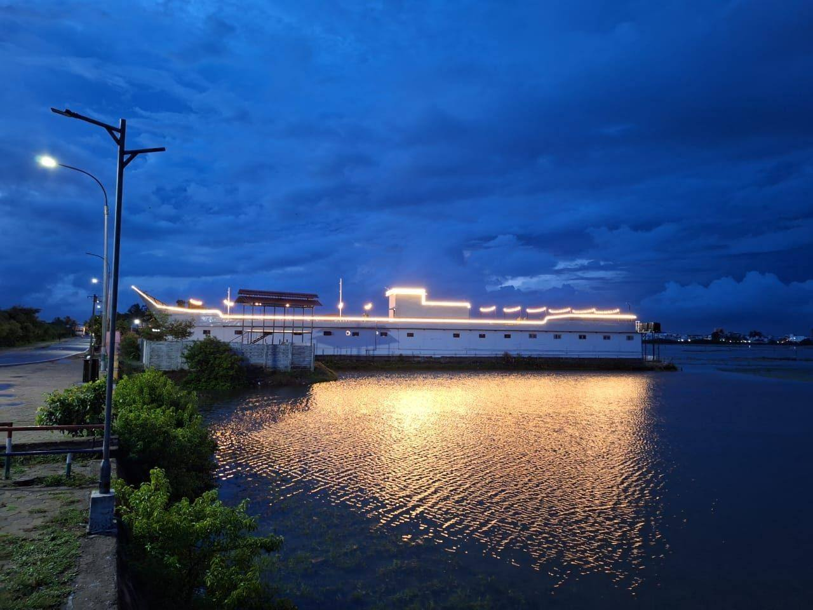

Karai Marina Experience Guide
Open lawn for birthday parties Karaikal
Celebrate birthdays at Karai Marina open lawn in Karaikal with Food Street access, open-air setup and event-friendly space for families and groups.
Open lawn for birthday parties Karaikal at Karai Marina
Marina Lawn is suitable for birthday parties, surprise events, family gatherings and small celebrations. The open-air layout gives guests a lively and comfortable celebration experience.
Karai Marina Karaikal is positioned as a beach-side Food Street, rooftop dining destination and Marina Lawn event venue for families, friends, corporate groups and event guests.
- Food Street and family dining in Karaikal
- Open lawn event space and celebration venue
- Easy enquiry through call, WhatsApp, email and map directions

Connect • Dine • Celebrate
Use the internal links below to explore related food, event and venue pages at Karai Marina.
Plan your visit to Karai Marina
For quick enquiry, visit the booking page, explore the Karaikal Food Street shops, view Marina Lawn events, or open the Karai Marina Google Map.